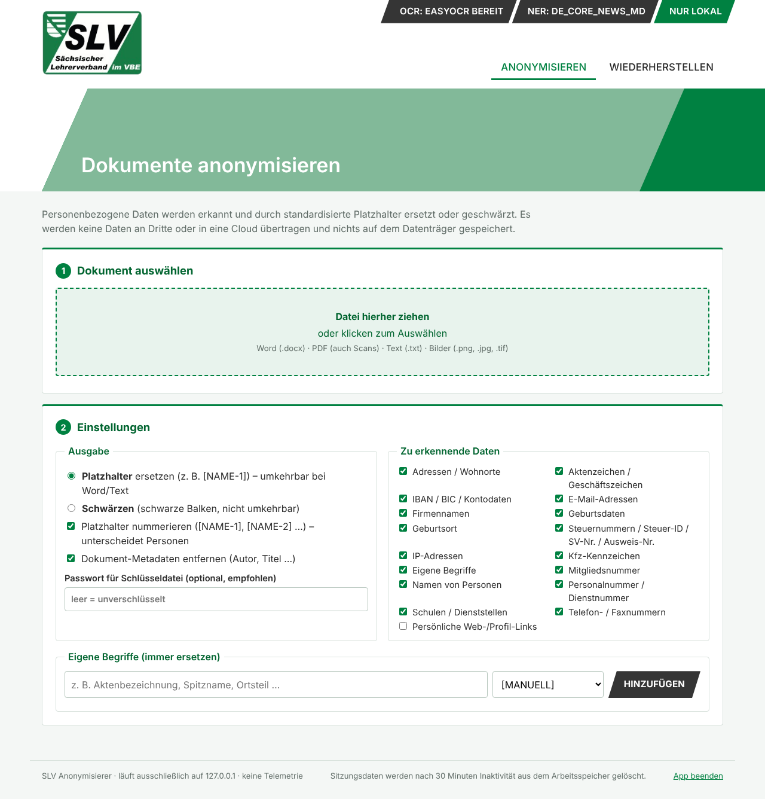
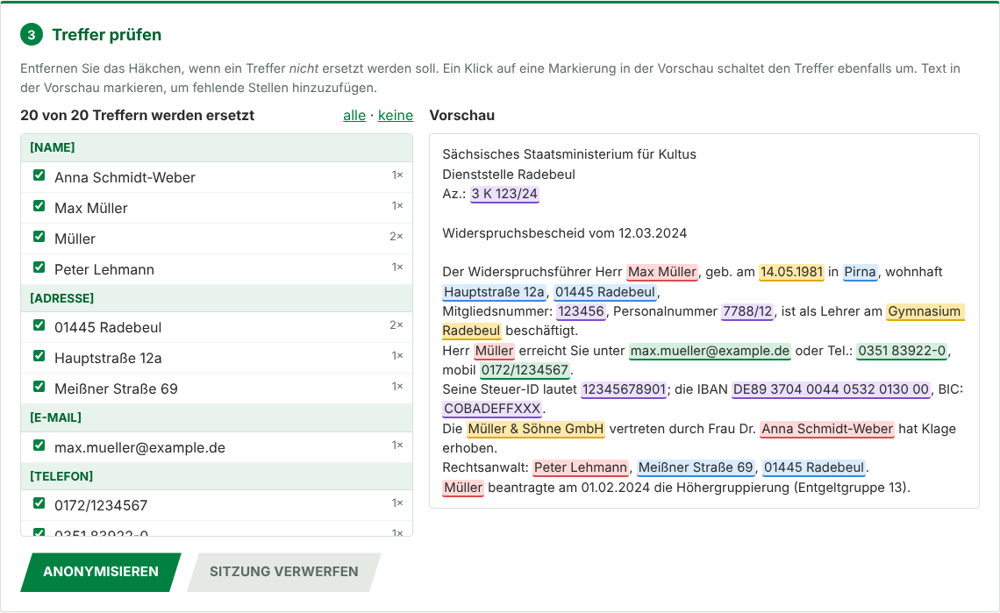
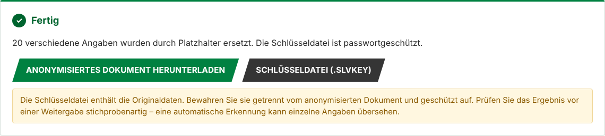
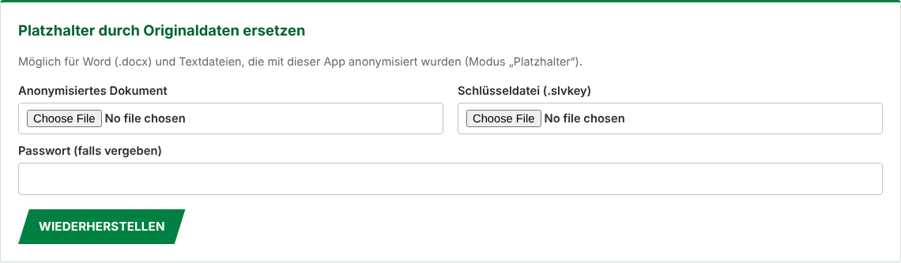

Der SLV Anonymisierer erkennt personenbezogene Daten in Dokumenten (Bescheide, Urteile, Schriftsätze …) und ersetzt sie durch Platzhalter wie [NAME-1] oder schwärzt sie. Die App läuft im Webbrowser – die gesamte Verarbeitung findet dabei ausschließlich auf Ihrem eigenen Gerät statt. Dokumente werden nicht hochgeladen.
Inhalt
1 Das Wichtigste in Kürze
- App öffnenDie Internetadresse der App im Browser aufrufen (Chrome, Edge, Firefox oder Safari).
- Dokument auswählenDatei in das grüne Feld ziehen (Word, PDF, Scan, Bild oder Text).
- Treffer prüfenErkannte Stellen kontrollieren, falsche abwählen, fehlende ergänzen.
- AnonymisierenAnonymisiertes Dokument und Schlüsseldatei herunterladen.
- Ergebnis kontrollierenDas Ergebnis vor jeder Weitergabe stichprobenartig durchsehen. Keine automatische Erkennung ist vollständig.
- FertigBrowser-Tab schließen. Das Dokument wird dabei aus dem Arbeitsspeicher gelöscht.
2 Voraussetzungen und Datenschutz
Voraussetzungen
- Ein aktueller Browser: Chrome, Edge, Firefox oder Safari – auf Windows, macOS, Linux oder einem Tablet. Eine Installation ist nicht nötig.
- Eine Internetverbindung, um die App zu öffnen. Beim ersten Öffnen lädt der Browser zusätzlich die KI-Namenserkennung (ca. 180 MB) und bei Bedarf die Texterkennung für Scans (ca. 15 MB). Beides speichert der Browser; danach geht es deutlich schneller.
- Empfohlen: mindestens 8 GB Arbeitsspeicher. Auf älteren Geräten dauert die Analyse länger.
Wie die App mit Ihren Dokumenten umgeht
- Keine Übertragung: Die App wird aus dem Internet geladen, arbeitet dann aber vollständig in Ihrem Browser. Dokumente, Trefferlisten und Schlüsseldateien werden nicht an einen Server gesendet.
- Keine Speicherung: Das Dokument liegt nur im Arbeitsspeicher dieses Browser-Tabs. Es wird gelöscht bei „Sitzung verwerfen“, nach 30 Minuten Inaktivität oder beim Schließen des Tabs.
- Was aus dem Internet geladen wird: Nur Programmbestandteile – die App selbst, das KI-Modell (von Hugging Face) und die Texterkennung (Tesseract, über den Dienst jsDelivr). Dabei werden keine Dokumentinhalte übermittelt.
3 Öffnen und Schließen
Öffnen
- Adresse aufrufenDie Internetadresse der App im Browser öffnen. Tipp: als Lesezeichen speichern.
- Status prüfenOben rechts zeigen die Reiter den Zustand: KI: lädt … % beim ersten Mal, danach KI: bereit. OCR wird erst bei der ersten Scan-Datei geladen. Nur im Browser bestätigt die lokale Verarbeitung.

Schließen
Schließen Sie einfach den Browser-Tab. Alle Dokumentdaten werden dabei aus dem Arbeitsspeicher gelöscht. Heruntergeladene Dateien bleiben in Ihrem Download-Ordner.
4 Dokument anonymisieren
Schritt 1 – Dokument auswählen
Ziehen Sie die Datei in das grüne Feld oder klicken Sie darauf, um die Datei auszuwählen. Die Analyse beginnt sofort. Bei Scans und Bildern läuft zuerst die Texterkennung; das dauert je Seite einige Sekunden bis wenige Minuten.
| Dateityp | Hinweis |
|---|---|
Word (.docx) | Formatierung bleibt erhalten. Alte .doc-Dateien vorher in Word als .docx speichern. |
| PDF mit Text | Der Originaltext wird dauerhaft entfernt (echte Schwärzung, nicht nur überdeckt). |
PDF als Scan, Bilder (.png, .jpg, .tif, .bmp) | Texterkennung (OCR), danach werden die Stellen im Bild überdeckt. |
Text (.txt) | Einfacher Text. |
Sehr große Dateien (über etwa 100 MB) können je nach Gerät den Arbeitsspeicher des Browsers überfordern. Kennwortgeschützte Dateien müssen vorher entsperrt werden.
Schritt 2 – Einstellungen
| Einstellung | Bedeutung |
|---|---|
| Platzhalter ersetzen | Erkannte Daten werden durch Platzhalter wie [NAME-1] ersetzt. Umkehrbar bei Word und Text (siehe Kapitel 6). |
| Schwärzen | Schwarze Balken statt Platzhalter. Nicht umkehrbar. |
| Platzhalter nummerieren | Empfohlen. Jede Person bzw. Angabe erhält überall dieselbe Nummer ([NAME-1], [NAME-2] …), verschiedene Personen bleiben unterscheidbar. Ohne Nummerierung steht nur [NAME]; die Wiederherstellung funktioniert dann nur, solange die Reihenfolge im Dokument unverändert bleibt. |
| Metadaten entfernen | Löscht Autor, Titel und ähnliche Dokumenteigenschaften aus der Ausgabedatei. |
| Passwort für Schlüsseldatei | Optional, aber empfohlen: Die Schlüsseldatei enthält die Originaldaten und wird damit verschlüsselt. Ohne Passwort kann sie jeder öffnen. |
| Zu erkennende Daten | Hier schalten Sie einzelne Kategorien ein oder aus (z. B. „Schulen / Dienststellen“). Die Trefferliste aktualisiert sich sofort. „Persönliche Web-/Profil-Links“ ist standardmäßig aus. |
| Eigene Begriffe | Begriffe, die immer ersetzt werden sollen (z. B. ein Ortsteil, ein Spitzname, eine Gesundheitsangabe). Begriff eintragen, Platzhalter-Art wählen, „Hinzufügen“ klicken. |
Schritt 3 – Treffer prüfen
Nach der Analyse erscheint links die Liste aller Treffer, nach Kategorien geordnet und mit der Anzahl der Vorkommen. Rechts sehen Sie das Dokument mit farbig markierten Treffern.
- Treffer abwählen: Häkchen in der Liste entfernen oder auf die Markierung in der Vorschau klicken. Der Treffer wird dann an allen Stellen nicht ersetzt. „alle“ / „keine“ schaltet die ganze Liste um.
- Fehlende Stelle ergänzen: Text in der Vorschau mit der Maus markieren, Platzhalter-Art wählen und auf „als Begriff hinzufügen“ klicken.
- Bei langen Dokumenten zeigt die Vorschau nur den Anfang. Die Verarbeitung erfasst immer das gesamte Dokument.

Schritt 4 – Anonymisieren und herunterladen
Klicken Sie auf „Anonymisieren“. Danach erscheinen zwei Download-Schaltflächen:
- Anonymisiertes Dokument herunterladen – die Ausgabedatei, Name:
Originalname_anonymisiert.docx(bzw..pdf,.txt,.png…). - Schlüsseldatei (.slvkey) – die Zuordnung Platzhalter ↔ Originaldaten, Name:
Originalname_schluessel.slvkey. Sie wird für die Wiederherstellung benötigt.

Mit „Sitzung verwerfen“ löschen Sie das ausgewählte Dokument sofort aus dem Arbeitsspeicher. Das geschieht auch automatisch nach 30 Minuten Inaktivität oder wenn Sie den Tab schließen.
5 Die Platzhalter
| Platzhalter | Ersetzt |
|---|---|
| [NAME] | Namen von Personen. Wird ein Name einmal erkannt, werden auch weitere Vorkommen (z. B. „Herr Müller“ nach „Max Müller“) ersetzt. |
| [ADRESSE] | Straße mit Hausnummer, Postleitzahl und Ort, Postfach, „wohnhaft in …“ |
| [E-MAIL] | E-Mail-Adressen |
| [TELEFON] | Telefon-, Fax- und Mobilnummern |
| [GEBURTSDATUM] | Geburtsdaten (nur mit Hinweis wie „geb.“ oder „Geburtsdatum“; normale Daten wie das Bescheiddatum bleiben) |
| [FIRMA] | Firmennamen mit Rechtsform (GmbH, AG, e. V., KG, UG …) |
| [BANKDATEN] | IBAN (mit Prüfsumme), BIC, Kontonummer, Bankleitzahl |
| [ID] | Steuernummer, Steuer-ID, USt-IdNr., Sozialversicherungsnummer, Ausweis-, Kunden-, Vertrags- und ähnliche Nummern |
| [MGNR] | Mitgliedsnummer |
| [AKTENZEICHEN] | Aktenzeichen und Geschäftszeichen (Gerichts- und Behördenformate) |
| [PERSONALNR] | Personalnummer, Dienstnummer |
| [SCHULE] | Schulen und Dienststellen (z. B. „Gymnasium Radebeul“) – in Verfahren mit Lehrkräften oft stark identifizierend |
| [GEBURTSORT] | Geburtsort |
| [KFZ] | Kfz-Kennzeichen (mit Hinweis wie „Kennzeichen“) |
| [IP] | IP-Adressen |
| [URL] | Web- und Profil-Links (standardmäßig ausgeschaltet) |
| [MANUELL] | Ihre eigenen Begriffe (oder jede andere gewählte Art) |
6 Originaldaten wiederherstellen
Möglich bei Word- und Textdateien, die im Modus „Platzhalter ersetzen“ anonymisiert wurden. Bei PDF und Bildern ist die Anonymisierung endgültig; hier bleibt das Originaldokument maßgeblich.
- Reiter „Wiederherstellen“ öffnenOben in der Navigation.
- Dateien auswählenDas (ggf. bearbeitete) anonymisierte Dokument und die zugehörige Schlüsseldatei
.slvkey. - Passwort eingebenFalls Sie beim Anonymisieren eines vergeben haben.
- „Wiederherstellen“ klickenDie Datei
Originalname_wiederhergestellt.docxwird heruntergeladen.

Die Platzhalter im Dokument dürfen nicht verändert werden: Schreibweise, eckige Klammern und Nummer (z. B. [NAME-1]) müssen genau erhalten bleiben. Der übrige Text darf bearbeitet werden.
Die Schlüsseldatei muss zu genau diesem Anonymisierungsvorgang gehören. Bei falschem Passwort erscheint eine Fehlermeldung. Ein vergessenes Passwort lässt sich nicht zurücksetzen.
7 Hinweise zu den Dateitypen
Word
- Ersetzt wird im gesamten Dokument: Text, Tabellen, Kopf- und Fußzeilen, Fuß- und Endnoten, Textfelder, Kommentare.
- Schrift, Größe, Fett/Kursiv und Absatzformate bleiben erhalten. Der Platzhalter übernimmt die Formatierung des ersten ersetzten Zeichens.
- Nachverfolgte Änderungen und Kommentare vorher annehmen bzw. entfernen.
- In Word eingebettete Bilder werden nicht per OCR bearbeitet. Enthalten sie Personendaten, das Bild separat anonymisieren oder entfernen.
- Seiten mit Text: Die Treffer werden dauerhaft aus dem PDF entfernt und durch Platzhalter bzw. schwarze Balken ersetzt.
- Seiten ohne Textebene (Scans): Texterkennung, danach werden die Stellen im Seitenbild überdeckt. Diese Seiten sind im Ergebnis Bilder und nicht durchsuchbar. Ein PDF kann beide Arten gemischt enthalten.
- Die Dokumenteigenschaften (Autor, Titel …) werden entfernt.
Scans und Bilder
- Die Trefferquote hängt von der Qualität des Scans ab. Gerade, kontrastreiche Vorlagen mit mindestens etwa 200–300 dpi funktionieren am besten. Handschrift wird nicht zuverlässig erkannt.
- Platzhalter werden in das Bild geschrieben; ist der Platzhalter länger als der Originaltext, erscheint die Schrift klein.
- Kameradaten (EXIF) werden nicht in die Ausgabedatei übernommen.
8 Wichtige Hinweise zur Nutzung
Kontrollieren Sie jedes Ergebnis vor einer Weitergabe stichprobenartig, am besten durch Suche nach den Namen der Beteiligten. Besonders heikel sind seltene oder fremdsprachige Namen, Vornamen allein, indirekte Identifizierung (z. B. „die Schulleiterin der Grundschule im Ortsteil X“), schlechte Scans und Handschrift.
Gesundheits-, Straf- und ähnlich sensible Angaben im Fließtext werden nicht automatisch erkannt. Tragen Sie solche Begriffe als „Eigene Begriffe“ ein.
- Pseudonymisierung oder Anonymisierung: Solange eine Schlüsseldatei existiert, ist das Ergebnis im Sinne der DSGVO regelmäßig eine Pseudonymisierung (Art. 4 Nr. 5 DSGVO). Die Daten bleiben für den personenbezogen, der den Schlüssel hat. Die rechtliche Einordnung im Einzelfall nehmen Sie selbst vor.
- Schlüsseldatei: Sie enthält die Originaldaten. Bewahren Sie sie getrennt vom anonymisierten Dokument auf, vergeben Sie ein Passwort und geben Sie sie nicht mit weiter.
- Heruntergeladene Dateien: Sie liegen im Download-Ordner Ihres Browsers. Löschen Sie Zwischenstände und nicht mehr benötigte Dateien (auch aus dem Papierkorb).
- Datenschutz der App: Die Verarbeitung läuft vollständig in Ihrem Browser. Dokumentinhalte werden weder hochgeladen noch auf der Festplatte gespeichert; Sitzungsdaten werden nach 30 Minuten Inaktivität gelöscht.
- Schlüsseldateien der Desktop-Version funktionieren auch in der Web-Version und umgekehrt.
9 Fehlerbehebung
| Meldung / Problem | Ursache und Lösung |
|---|---|
| Reiter zeigt lange „KI: lädt …“ | Beim ersten Öffnen werden ca. 180 MB geladen; das kann bei langsamer Verbindung einige Minuten dauern. Sie können währenddessen schon ein Dokument auswählen – die Analyse wartet dann auf das Modell. |
| Reiter zeigt „KI: nicht verfügbar“ bzw. Hinweis „nur über Muster erkannt“ | Das KI-Modell konnte nicht geladen werden (keine Internetverbindung, Firmen-Proxy oder Firewall blockiert huggingface.co). Namen werden dann deutlich schlechter erkannt. Seite neu laden oder in einem anderen Netz versuchen. |
| Scan wird nicht gelesen / „Datei konnte nicht gelesen werden“ bei Bildern | Die Texterkennung wird beim ersten Scan aus dem Internet geladen (cdn.jsdelivr.net). Internetverbindung prüfen und erneut versuchen. |
| „Sitzung abgelaufen“ | Nach 30 Minuten Inaktivität werden Daten gelöscht. Datei erneut auswählen. |
| Die Seite reagiert langsam oder stürzt ab | Sehr große oder viele Seiten lange Scans brauchen viel Arbeitsspeicher. Andere Tabs schließen oder das Dokument in kleinere Teile aufteilen. |
| „Dateityp nicht unterstützt“ / „Datei konnte nicht gelesen werden“ | Nur .docx, .pdf, .txt und gängige Bildformate werden verarbeitet. .doc zuerst in Word als .docx speichern. Kennwortgeschützte oder beschädigte Dateien vorher öffnen und neu speichern. |
| Passwort falsch bei der Wiederherstellung | Passwort genau eingeben (Groß-/Kleinschreibung). Es gibt keine Möglichkeit, ein vergessenes Passwort zurückzusetzen. |
| Zu viele oder zu wenige Treffer | In der Trefferliste Häkchen entfernen bzw. fehlende Stellen als „Eigene Begriffe“ ergänzen; Kategorien ein- oder ausschalten. |
10 Weitergabe, Aktualisierung, Entfernen
Weitergabe
Geben Sie einfach die Internetadresse der App weiter. Auf anderen Geräten ist nichts zu installieren.
Aktualisieren
Neue Versionen stehen automatisch zur Verfügung, sobald sie veröffentlicht sind. Gegebenenfalls die Seite einmal neu laden.
Gespeicherte Modelle entfernen
Das KI-Modell und die Texterkennung liegen im Speicher des Browsers. Sie lassen sich über die Browser-Einstellungen („Websitedaten löschen“ für die Adresse der App) entfernen und werden beim nächsten Öffnen neu geladen.
SLV Anonymisierer · Bedienungsanleitung · Web-Version 2.0 · Stand: November 2026 · Sächsischer Lehrerverband e. V.